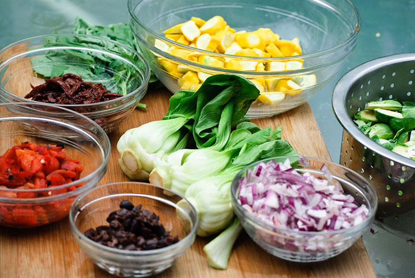

Tips and Tricks to Home Cooking
Cooking in college or on your own can become stressful quickly if you are not prepared. On this page, I will be sharing some information on how I try to manage cooking for myself while also balancing college classes, a job, and a social life. Some topics I will be going over are how to plan, budget, and shop so that you can make the most of the process.
Home cooking offers so many benefits and it is a very important life skill to learn how to cook for yourself and others so that you can be self-sufficient. Whether you’re a beginner or an experienced cook, hopefully, these tips can help you make the most of your solo cooking adventures!
Additionally, as a college student, I understand the challenges of navigating a tight schedule. In the midst of assignments and deadlines, finding time to cook nutritious meals is crucial. I'll be sharing insights on quick and healthy recipes that fit into a busy lifestyle. From time-saving techniques to meal prepping strategies, my goal is to help you enjoy the process of cooking even when time is limited.